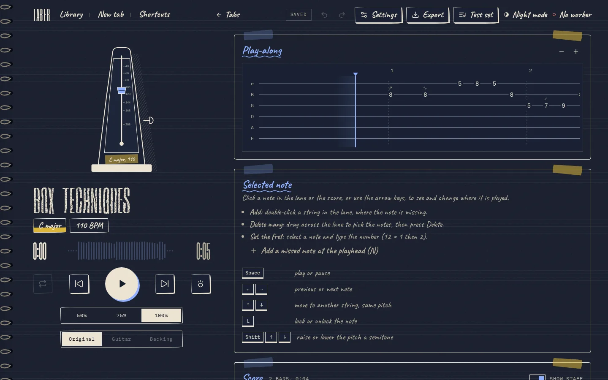

A solo in,
a tab out
Taber listens to a recorded guitar solo the way the wheel reads: from your take at the centre, outwards, until every note has a string, a fret, a beat and a technique.
All downloads ↓ Windows, macOS and Linux. Free, version . Other systemsThree ways in
Free, v0.1.0. About 0.5 GB once installed, plus the engine picked on first launch.
Verify a download with SHA256SUMS.txt, or see all releases.
The engine
The first launch installs the engine once, and suggests the one that fits this computer. Each circle's area is its download.
- 3–4 GBNVIDIA GPU
- Fastest. Every model on the graphics card. Windows or Linux, NVIDIA driver 580 or newer.
- 0.6 GBProcessor
- The same models on the CPU: same tabs, slower analysis. The pick on Macs and on PCs without NVIDIA.
- 0.3 GBLite
- A lighter pitch tracker, no backing-track removal, no string classifier. Video assist still works.
Your recordings never leave your computer.
Then you edit
The editor at night (click the amp's lamp in the app), with a lick it has just transcribed.

Honest numbers
Notes fully right (pitch, string and fret) on recordings it never trained on.
Acoustic, a GuitarSet player it never heard.
Electric, unseen IDMT licks: the hard case, mostly notes that ring over the next.
One note at a time: solos, not chords. Hammer-ons and pull-offs are not detected from audio yet.
First launch
Taber is not code-signed yet: each system asks once.
chmod +x the AppImage, or install the .deb.